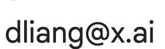

Email:  I am a member of technical staff at xAI. Before that, I was a research scientist at Netflix and worked on personalization, policy learning, and LLM post-training. I completed my Ph.D. in the Electrical Engineering Department at Columbia University, as part of the LabROSA, working with Professor Dan Ellis and Professor David Blei. Prior to that, I completed my master's degree in Music and Technology program at Carnegie Mellon University, working with Professor Roger Dannenberg in the School of Computer Science, where I was part of the Computer Music Group. |
For the most up-to-date information please see my Google Scholar page.
Here are some (very old) notes regarding some topics I found interesting. I wrote these just for fun (and I hope they can be useful to someone in the future). Therefore, there might be mistakes/errors in these notes. If you find any problems, please let me know.
A proof that Maximum Likelihood Estimation (MLE) is biased for variance estimator.
A note that shows some useful properties for matrix derivative.
Some technical details for the Expectation Maximization (EM) algorithm.